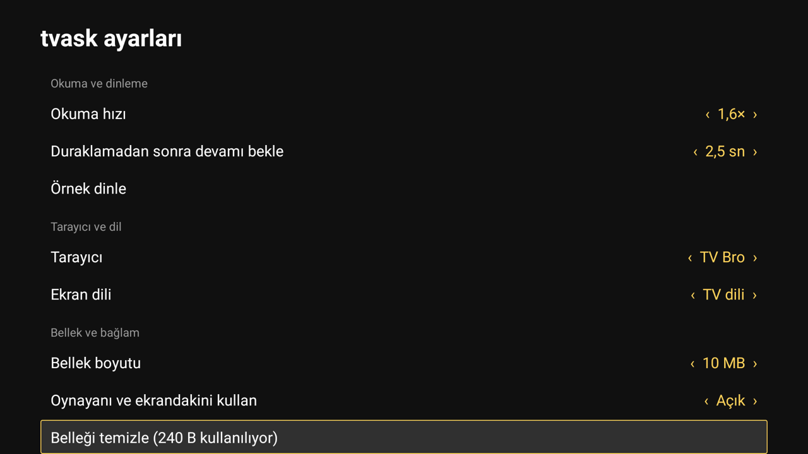

tvask is an open source assistant for Android TV. Press the mic key on your remote and talk. It answers in your language, searches the web, opens apps and finds the show.
Recorded on a TCL Google TV. Press the mic key on the remote for the next one.
Set it up in one prompt
You don't need the TV's address or a manual. Your coding agent finds the TV on your Wi-Fi, checks it, installs tvask and works around your TV maker's quirks. It shows every command first.
Turn on developer modeOn the TV: Settings, System, About. Press OK on Android TV OS build seven times.
Turn on USB debuggingSettings, System, Developer options. It lets your computer talk to the TV over Wi-Fi.
Get two API keysDeepSeek, or any OpenAI compatible model, and Brave Search. Your agent sends them to the TV, never to a file.
Then your agent
Finds your TV on the Wi-Fi. You allow it on the TV.
Checks Android, the Google app and the remote.
Installs tvask and gives it what it needs.
Works around your TV maker's blockers.
Sends your keys to the TV.
Asks you to press the mic key and say hello.
Works with Claude Code, Codex, Gemini CLI, Cursor or any agent that can run adb. An agent with adb has shell rights on your TV, so read what it runs before you allow it. Prefer to do it by hand? Follow AGENTS.md.
Talk to it like a person
Ask and search
Will it rain this weekend?Is GitHub down?What was the Beşiktaş score?
Find something to watch
Play Barış Manço on YouTubeSearch Prime Video for The BoysOpen YouTube Music
Browse on the TV
Show me some news sites in EnglishWhat's on the front page of bbc.com?
Run the TV
Which apps are open?Close them allHow much storage is left?
Keep talking
And on Saturday?Remember that I live in Istanbul
Know what's on
What am I watching?Who plays in this?
It answers in the language you speak, and shows cards for the weather, scores, sites, open apps and memory. Google's recognizer on the TV hears your TV's language best.
Settings live on the TV
Reading speed, the wait after you pause, the browser, the screen language and the memory size. Change them with the remote, or say open tvask settings.

The settings screen on a Turkish TV. tvask's own texts come in English and Turkish.
Fix the rest of the TV, too
The same agent can fix what makes Android TVs annoying. We did all of these on our TCL. Each prompt points your agent to a short guide, and it asks before every change.
The TV feels slow
Finds what eats memory, turns off apps you never use, and makes menus quicker. Everything can be undone.
Our 2 GB TCL runs with 28 apps off
My Android TV feels slow.
Follow "Slow TV" in
https://raw.githubusercontent.com/urtuba/tvask/main/TUNEUP.md
and ask me before every change.
The home screen is heavy
Moves you to a light launcher without ads, and only removes the old one once the new one works.
We use Projectivy Launcher
Move my Android TV to a lighter home screen.
Follow "Lighter home screen" in
https://raw.githubusercontent.com/urtuba/tvask/main/TUNEUP.md
and ask me before every change.
Remote keys do nothing
Gives dead keys a new job with tvkeys, for example opening your favorite app. No root, no lag.
Five keys on our remote
Some keys on my TV remote do nothing.
Follow "Remote keys that do nothing" in
https://raw.githubusercontent.com/urtuba/tvask/main/TUNEUP.md
and ask me before every change.
The mic key does nothing
Checks whether the remote is really connected over Bluetooth, and walks you through pairing it again.
Our remote was paired but never connected
The mic key on my TV remote does nothing.
Follow "The mic key does nothing" in
https://raw.githubusercontent.com/urtuba/tvask/main/TUNEUP.md
and ask me before every change.
Show an iPhone on the TV
Turns the TV into an AirPlay receiver. Screen and sound, upright or sideways, no app on the phone.
On the Media key of our remote
I want to show my iPhone screen on my Android TV.
Follow "Show an iPhone on the TV" in
https://raw.githubusercontent.com/urtuba/tvask/main/TUNEUP.md
and ask me before every change.
Your TV needs a code change? Fork it.
Most TVs need only settings and adb commands. If yours needs more, fork the repository and keep the change there. Search links, the panel and the model's tools each live in one file. Send back fixes that help every TV, and tell us about your TV.
Where your data goes
Your voice goes to Google's speech recognizer on the TV.
The words, your app list and your memory notes go to the model provider you chose.
What is playing and on screen goes only when you ask about it. No screenshots, and you can turn it off.
Searches go to Brave, weather places to Open-Meteo. Keys stay on the TV.